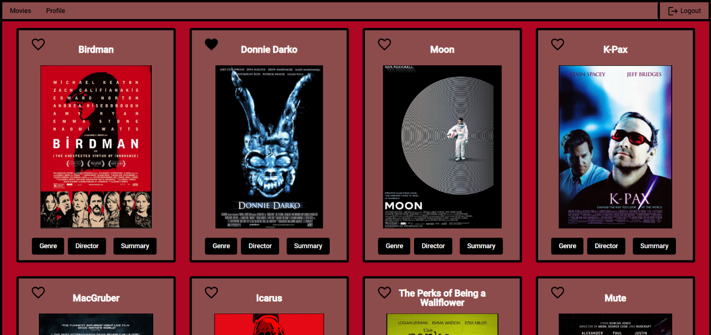

For the server-side of my project, I created a RESTful API using tech such as Express/Node, in conjunction with MongoDB to store data collections on both movies and users.
This API is accessible with HTTP methods, GET, PUT, POST, & DELETE to manipulate the data in the users/movie collections.
Thoughout development, I tested my endpoints with the use of Postman to ensure I was getting the correct responses from the HTTP requests.
BrettFlix Case Study

Overview
This "BrettFlix" project is a full-stack application built from the ground up using the MEAN (Mongo, Express, Angular, Node) tech stack.
Purpose and Context
This project is somewhat similar to websites such as "IMDB" that I completed as part of my Career Foundry course in Full-Stack Web Development.
Objective
The goal for this project was to build out both the server-side & client-side of a full-stack project completely from scratch to add to my portfolio.
Duration
From start to finish between the server-side, client-side, and documentation this project took me about 3 months to complete.
Credits
My role was the lead developer on this project with the aid of my CareerFoundry Tutor and Mentor.
Tools, Skills, Methodologies


The project was built with Node.js, Express, MongoDb, Postman, the Angular framework, TypeScript (a new programming language for me at the time), and the Angular Material UI component library.
Server-Side Project Process
After I had the endpoints complete and tested, I added two passport strategies (LocalStrategy and JWTSrategy) for authentication. I then integrated them as middleware as existing API endpoints to ensure only users with a JWT token can make requests to the API. I also implemented CORS into the app to ensure the API is accessible by all domains, added password hashing to the HTTP handlers to ensure password arent stored in the database, and data validation to ensure all data is formatted as it should be.
At this point, I deployed my app to Heroku, uploaded my database to MongoDB, and connected the 2, completing my back-end.

Client-Side Project Process
With my server-side code established, I began working on the client-side. As this project was going to be developed using the Angular framework, I started off by creating a new app using the Angular CLI, and the necessary logic for making API calls. I then made dialog boxes for both the created user login component and user registration component and linking them with the “app.component.ts” root component and ensuring the proper response from my API was returned.From there, I then built out a welcome page component where the user registration/login functionality would live, as well as building a user profile component allowing users to edit/view/delete their profile, & a movie card component that displays the movies on the main page after users login. The movie cards themselves contain buttons that display dialog boxes containing information about the movie’s director, genre, of a summary of the movie.


Finally, I made the application responsive, finalized my CSS stylings of the application, applied a simple UI design using Angular Material, and documented my code using TypeDoc.
Challenges
One of the most frustrating challenges I had with this project was getting my user information to properly update when trying to do so within the app. Ultimately, with the guidance of my mentor and the use of Postman, we were able to deduce that I had a slight issue with one of my endpoints and wasn't getting the desired response.
Conclusion
This project was my first foray into both server-side coding as well as working with the Angular framework. It was quite a bit of new knowledge to take in, but I ultimately ended up with a clean looking, well-functioning application that I’m proud to have in my portfolio.